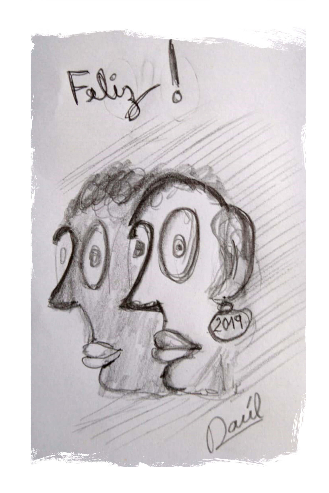
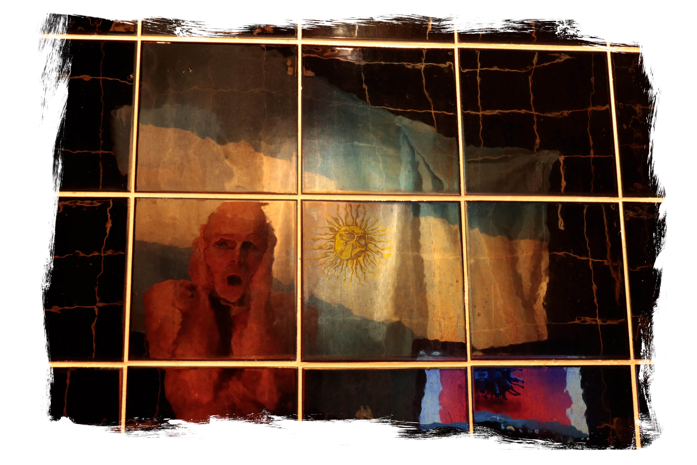
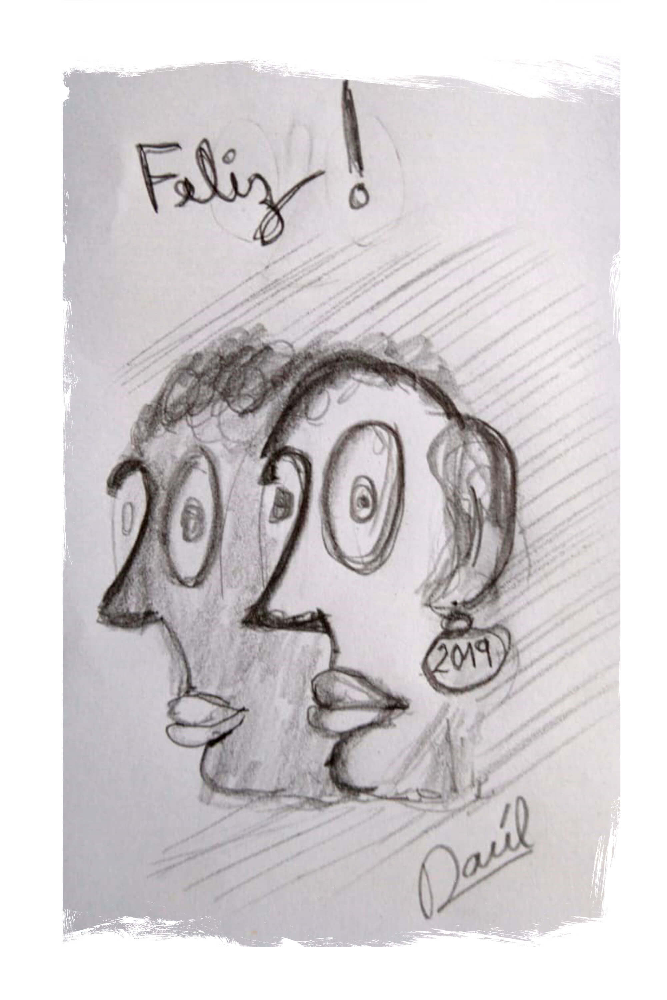
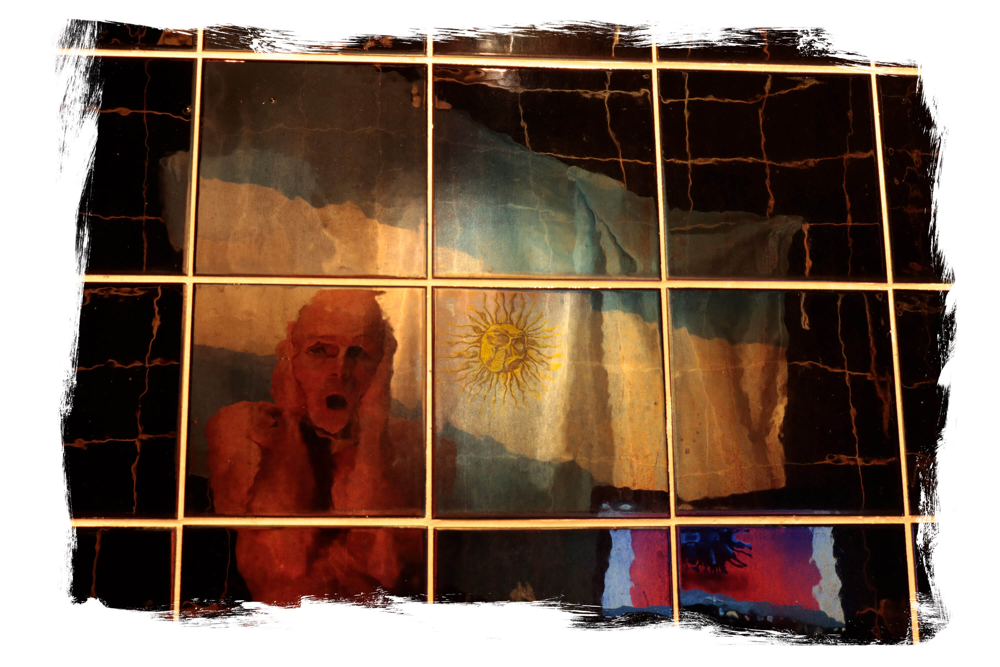

.jpg) 



Raúl Pesce
[artista fotográfico, hetero-friendly + 90% arquitecto]
En mi infancia, mi profesora de plástica Alicia, además de introducirme en el
mundo de líneas y pinceladas, un buen día se apareció con la noticia del
concurso de las galletitas El Orden. Presenté mi obra y fui el ganador de una
gran lata de 5kg de galletitas que cargué en mis manos hasta mi casa. Así
apareció el arte en mi vida y no se fue nunca más.
En mi adolescencia, había que ir a la facultad y la elegida fue la carrera de
Arquitectura. Fueron estudios extensos, pero inconclusos. No obstante me
dejaron la impronta en la mirada de todo objeto que portara rasgos de
estética o diseño.
Esta mirada sesgada me hizo elegir el sinuoso camino de las imágenes que no
dependen del todo del artista, sino más bien de una mezcla de la realidad
circundante, filtrada e intervenida por la propia visión del fotógrafo.
Ya me reconocía fascinado por el folklore de las fotografías familiares y fue
un hito en mi proceso el encuentro con todo el archivo acumulado por mi tío
Juan Bautista… que, al momento de partir, me dejó su inmenso registro de
imágenes que lo relataban, mucho más de lo que él se había relatado en vida.
Su colección terminó siendo el repertorio gráfico testigo de nuestra historia
familiar, del que me apropié y aún conservo… y atesoro.
En Toledo, allá por 1996, se produjo mi encuentro con la obra de El Greco: “El
Entierro del Conde de Orgaz” y mi identificación con uno de los personajes.
Así fui dándole forma a mis desvelos artísticos y casi espontáneamente se
gestó ARTE MUTANTE, la disciplina que me atrapó totalmente y no abandoné
hasta la fecha, a partir de la primera obra que di a luz, con la colaboración de
mis amigos de SIGLA. Así uno de ellos mutó en "El Caballero de la mano en el
pecho" también de El Greco... del siglo XXI.
Todo continuó frondoso y productivo, hasta que presenté una de mis obras
“Llegamos!” en el Salón Nacional de Artes Visuales 2021, luego seleccionada
y finalmente pude verla expuesta en el Centro Cultural Kirchner: un sueño
cumplido que no fue conclusión de nada, sino el comienzo y continuidad de
esta pasión que me abarca.